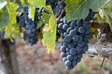

|  | Zinfandel is a variety of black-skinned wine grape. The variety is grown in over 10 percent of California vineyards. DNA analysis has revealed that it is genetically equivalent to the Croatian grapes Crljenak Kaštelanski and Tribidrag, as well as to the Primitivo variety traditionally grown in Apulia (the "heel" of Italy), where it was introduced in the 18th century. The grape found its way to the United States in the mid-19th century, where it became known by variations of a name applied to a different grape, likely "Zierfandler" from Austria. The grapes typically produce a robust red wine, although in the United States a semi-sweet rosé (blush-style) wine called White Zinfandel has six times the sales of the red wine. The grape's high sugar content can be fermented into levels of alcohol exceeding 15 percent. The taste of the red wine depends on the ripeness of the grapes from which it is made. Red berry fruit flavors like raspberry predominate in wines from cooler areas, whereas blackberry, anise and pepper notes are more common in wines made in warmer areas and in wines made from the earlier-ripening Primitivo clone. |